Screen 01
Scout Login
scout_login
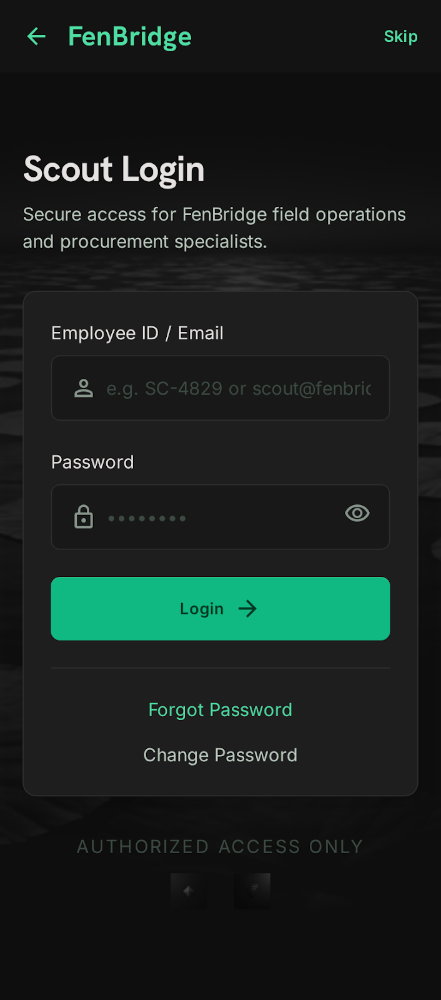
High-fidelity screen capture unavailable. Refer to source code directly.
Purpose
Authenticate scout using specific enterprise credentials. Dedicated gateway distinct from Farmer or Buyer public registration channels.
Business Requirement
Scouts operate as internal field personnel utilizing provisioned Employee IDs and pre-hashed keys issued by administrative command nodes.
User Experience (UX)
Streamlined input block requiring strict username and passphrase evaluation paired with forgot-password rescue triggers. Explicitly excludes third-party OAuth.
User Actions
- Submit provisioned username string (Employee ID or corporate email).
- Enter secure access passphrase.
- Invoke primary login gateway. Auto-routes straight to Scout Profile on validation.
- Access password reset mechanisms via registered email workflows.
Technical Details
- Username verification targets provisioned employee IDs (e.g., SCT001) or explicit verified email signatures.
- Password strings matched securely against persisted bcrypt iterations inside scout_credentials tables.
- Issues standardized JWT bearer signatures persisted client-side utilizing encrypted local keystores.
- Auto-evaluates cached token status upon app initialization to bypass redundant login steps.
Design Details
Top layout block features centered corporate FenBridge vectors without navigation return buttons.
Central header: "Scout Login" (Title 2) aligned alongside helper copy: "Access your daily tasks and farmer registrations."
Input rows:
- Field 1: "Employee ID / Email" utilizing standard alphanumeric soft keypads. Placeholder: "SCT001 or scout@fenbridge.in".
- Field 2: "Password" container supporting dynamic visibility toggling via embedded eye iconography.
Inline rescue links: "Forgot Password?" left-aligned, alongside conditional "Change Password" shortcuts.
Primary execution: Full-width button spanning 56 dp vertically incorporating inline spin states during background verification.
Displays crisp high-contrast red feedback prompts immediately below input targets upon credential validation fails.
Database Schema
scout_credentials (
id UUID PRIMARY KEY,
user_id UUID FOREIGN KEY UNIQUE,
employee_id VARCHAR(50) UNIQUE,
password_hash VARCHAR(255),
password_reset_token VARCHAR(500),
password_reset_expires TIMESTAMP,
last_login TIMESTAMP
)
Screen 02
Scout Profile Hub
scout_profile
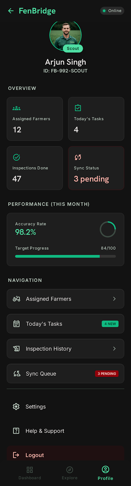
High-fidelity screen capture unavailable. Refer to source code directly.
Purpose
Central hub interface displaying assigned farmer metrics, real-time pending daily task load, and ongoing offline sync progress.
Business Requirement
Deliver immediate field-level context mapping assigned operational regions, pending task lists, and cumulative registration productivity metrics.
User Experience (UX)
Clean responsive grid layout itemizing operational key parameters placed directly above direct sub-module navigation shortcuts.
User Actions
- Evaluate gross counts representing assigned farmers alongside pending daily tasks.
- Tap assigned menus launching detailed overviews (Farmers, Tasks, Inspection History, Sync queues).
- Trigger user session termination clicking primary Logout bindings.
Technical Details
- Retrieves assigned administrative districts directly from user properties mapping assigned_district attributes.
- Computes absolute farmer volume fetching matching scout bindings across farmer_scout_assignment files.
- Queries active pending tasks matching target execution dates equal to the current device date.
- Caches high-level empirical metric objects locally to support instantaneous offline loading.
Design Details
Top header section renders 80 × 80 dp rounded personnel avatars managed exclusively by internal admin systems.
Displays prominent full names alongside tailored "Scout" role identification tags using vibrant cyan backgrounds.
Highlights assigned geographical territories clearly: E.g., "Dinajpur District".
Quick Stats Grid (2-column array):
- Node 1: Primary count "12" mapping "Assigned Farmers".
- Node 2: Primary count "4" tracking "Today's Tasks".
- Node 3: Lifetime total "47" itemizing "Inspections Done".
- Node 4: Dynamic sync tracker displaying active pending states (e.g., "3 items pending" or "All synced ✓").
Monthly overview cards render live progress tracking parameters outputting historical verification accuracy scores dynamically.
Navigation list items stack side-by-side deploying rich icon helpers directing focus efficiently toward respective functional workflows.
Top-right corner incorporates persistent network indicators lighting green during active sync or muted grey during offline caching.
Database Schema
farmer_scout_assignment (
id UUID PRIMARY KEY,
farmer_id UUID FOREIGN KEY,
scout_id UUID FOREIGN KEY,
assigned_at TIMESTAMP,
is_active BOOLEAN DEFAULT true
)
Screen 03
Assigned Farmers
assigned_farmers
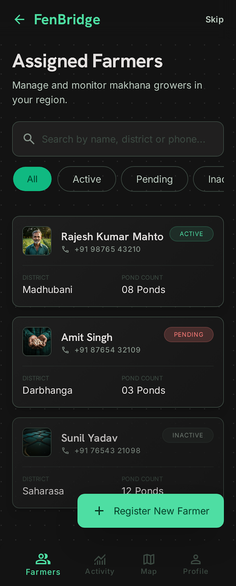
High-fidelity screen capture unavailable. Refer to source code directly.
Purpose
Itemize allocated farmer profiles linked to active operational territory assignments alongside direct new registration CTA targets.
Business Requirement
Guarantee clear overview filtering based on current account activation states (Active, Pending Approval, Inactive).
User Experience (UX)
Dynamic list interface incorporating integrated search strings and quick toggle filtering controls above touch-friendly record containers.
User Actions
- Input text queries resolving matching names or contact numbers instantly.
- Tap top category filters toggling specific active verification groups.
- Select target farmer blocks accessing detailed operational tabs.
- Invoke bottom floating action triggers initiating complete multi-step farmer onboarding sequences.
Technical Details
- Executes inner joins bridging farmer_scout_assignment records against parent users tables mapping matching scout identifiers.
- Evaluates total linked pond profiles dynamically querying matching child keys.
- Supports client-side case-insensitive string filtering executing against cached local data models.
- Extracts last activity timestamp parameters tracking maximum recorded log updates across inspection modules.
Design Details
Top row integrates return navigation options alongside visible search iconography opening clean input toolbars inline.
Search bar renders custom hints: "Search by name or mobile".
Filter layout outputs multi-chip toggle rows itemizing: All / Active / Pending Approval / Inactive.
Record listings build on surface-level card blocks displaying bold names alongside clean geographical strings. E.g., "Dinajpur • 2 ponds".
Top-right card edge embeds colored indicator pills mapping active verification states visibly (Green checkmark for active status, Amber clock for pending).
Features clean right-facing arrow graphics directing users toward deeper administrative details upon tap interactions.
Bottom screen sector embeds large floating action buttons reading "+ Register New Farmer" utilizing high-contrast primary cyan styling.
Database Schema
SELECT u.full_name, u.mobile_number, u.status, count(p.id) as pond_count
FROM farmer_scout_assignment fsa
JOIN users u ON fsa.farmer_id = u.id
LEFT JOIN ponds p ON u.id = p.user_id
WHERE fsa.scout_id = current_scout GROUP BY u.id;
Screen 04
Farmer Detail (Scout View)
farmer_detail_scout
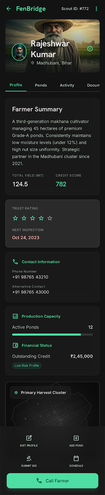
High-fidelity screen capture unavailable. Refer to source code directly.
Purpose
Expose complete granular profile parameters covering active pond properties, itemized chronological log trails, and bound document files.
Business Requirement
Supply comprehensive operational data necessary before initiating field visits or filing proxy procurement bidding counters.
User Experience (UX)
Organized tabbed interface separating Profile, Ponds, Activity, and Documents rendering distinct datasets cleanly within shared header spaces.
User Actions
- Inspect core identity metrics paired with active bank validation markers.
- Toggle lower view tabs inspecting itemized asset logs and uploaded media files.
- Trigger actionable shortcuts supporting inline edits, manual pond entries, proxy bid submissions, or direct phone dials.
Technical Details
- Fetches unique target farmer records alongside all matching child models mapped across ponds database structures.
- Queries linked banking tables outputting verified penny drop clearinghouse states securely.
- Assembles multi-module operation logs bridging procurement bids, harvest inspection runs, and ledger payments.
- Compiles uploaded legal files itemizing source document URLs across secure bucket storage layers.
Design Details
Top block outputs target farmer titles alongside vertical contextual option triggers (⋮) mapping edit overrides.
Profile Summary block renders crisp rows tracking contact numbers, local districts, and verified bank ledger status tags.
Tab Navigation bar itemizes four primary options: Profile | Ponds | Activity | Documents.
- Profile tab displays core strings alongside read-only capability badge collections.
- Ponds tab itemizes registered water bodies rendering total surface area and metric capabilities visibly.
- Activity tab utilizes crisp vertical timeline lines detailing historic event markers sequentially.
- Documents tab displays uniform high-fidelity preview thumbnails supporting full-screen image expansion.
Bottom layout container houses persistent stacked actionable helper controls: "Edit Details", "Add Pond", "Submit Bid on Behalf", and "Call Farmer".
Database Schema
// Fetching entity context spanning multiple platform ledgers:
SELECT * FROM users u LEFT JOIN ponds p ON u.id = p.user_id
LEFT JOIN farmer_bank_account b ON u.id = b.user_id
WHERE u.id = target_farmer_id;
Screen 05
Today's Tasks
today_s_tasks
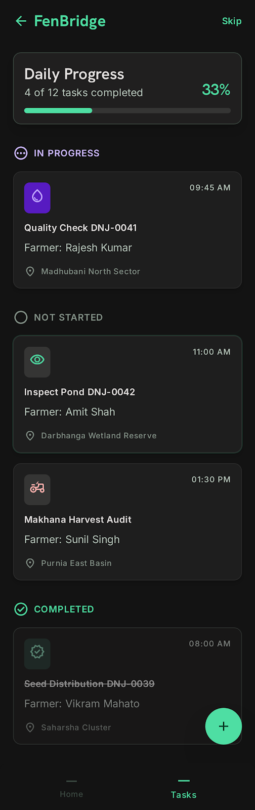
High-fidelity screen capture unavailable. Refer to source code directly.
Purpose
Central task orchestration view driving daily field operations. Itemizes itemized active assignments routed from central administrative command desks.
Business Requirement
Ensure field efficiency by ordering due requirements chronologically while grouping output rows by current active tracking states.
User Experience (UX)
Clear categorized queue itemizing Not Started, In Progress, and Completed groups balanced against visible visual completion metric charts.
User Actions
- Evaluate daily load metrics monitoring outstanding itemized quotas.
- Tap specific requirement rows launching detailed operational workflow views.
- Trigger background synchronization updating queue contents via network calls.
Technical Details
- Queries active execution logs matching target assigned personnel keys against current date boundaries.
- Groups items across operational states: not_started, in_progress, completed.
- Sorts active child rows by scheduled target times ensuring optimized driving pathways.
- Supports fully native offline cache reading pulling target instructions from local SQLite memory blocks.
Design Details
Top header provides clean navigation structures alongside explicit refresh triggers.
Summary info bar renders total task metrics visibly: E.g., "4 tasks today" paired with crisp horizontal visual progress gauges.
Group blocks separate assignments cleanly:
- Not Started group utilizes warm top border highlights. Card item outputs concise instructions: "Inspect Pond DNJ-0042" alongside due timing tags ("Due at 10:00 AM").
- In Progress group renders informative blue header badges incorporating integrated dynamic timer displays outputting elapsed field duration strings.
- Completed group outputs muted rows emphasizing finished targets through subtle desaturated display formats.
Features informative vector empty states when no tasks remain: E.g., "No tasks for today. Great work!"
Database Schema
tasks (
id UUID PRIMARY KEY,
assigned_to_scout UUID FOREIGN KEY,
task_type ENUM ['farmer_registration', 'pond_inspection', 'lot_verification', 'seal_application'],
due_date DATE,
due_time TIME,
status ENUM ['not_started', 'in_progress', 'completed', 'cancelled'] DEFAULT 'not_started'
)
Screen 06
Task Detail
task_detail

High-fidelity screen capture unavailable. Refer to source code directly.
Purpose
Full detail view exposing granular execution requirements, explicit target GPS driving maps, and state-transition operational command triggers.
Business Requirement
Supply robust instruction strings while driving downstream operational chains depending on specific task category constraints.
User Experience (UX)
Multi-card dashboard itemizing requirement context, target entity metadata, physical driving maps, and clear primary CTA execution targets.
User Actions
- Review descriptive instruction blocks specifying exact inspection or verification procedures.
- Tap geographic coordinate points activating native turn-by-turn external navigation apps.
- Click "Start Task" initiating corresponding data-capture questionnaires.
- Confirm completion post file uploads modifying parent ledger records.
Technical Details
- Fetches complete execution parameters matching target task keys.
- Evaluates related database models dynamically based on target task_type parameters.
- Routes UI flows directly toward contextual sub-modules (Pond Inspection forms, Lot verification modals).
- Executes atomic database updates writing completed timestamps straight to local caches pending upstream sync.
Design Details
Header container outputs informative categorical identification badges: E.g., "Pond Inspection" alongside precise scheduled time targets.
Farmer & Location card renders full names paired with embedded spatial map snippets. Highlights linear distances calculated straight from active user mobile GPS modules.
Task Description block employs clean highly legible typography outputting administrative instructions verbatim.
Primary Action strip updates dynamically matching current execution phase:
- Unstarted: Displays large primary buttons reading "Start Task" paired with forward arrow iconography.
- Active: Swaps triggers to "Complete Task" showing confirmation indicators.
- Closed: Exposes secondary link helpers allowing reviewing staff to inspect submitted parameters post verification.
Database Schema
// Updating operation record attributes upon successful client completion:
UPDATE tasks SET status = 'completed', completed_at = CURRENT_TIMESTAMP WHERE id = active_task_id;
Screen 07
Inspection History
inspection_history
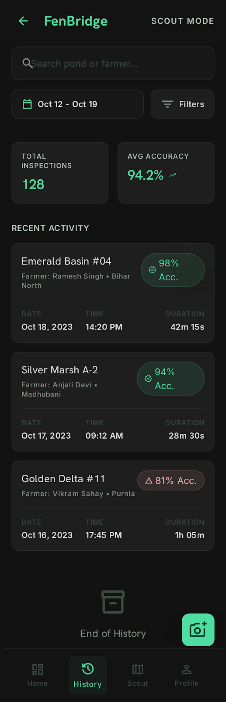
High-fidelity screen capture unavailable. Refer to source code directly.
Purpose
Itemize completed field quality inspections chronologically enabling active verification personnel to track personal accuracy models.
Business Requirement
Establish clear operational accountability outputting assigned accuracy feedback scores determined via downstream quality gates.
User Experience (UX)
Searchable ledger view sorted reverse-chronologically itemizing target water bodies alongside calculated empirical accuracy pills.
User Actions
- Input search parameters narrowing items by specific target farmer names or water body strings.
- Filter record listings picking target calendar ranges via integrated date-picker elements.
- Tap historical items accessing read-only evidentiary copies containing captured media metadata.
Technical Details
- Fetches completed records matching target personnel IDs from pond_inspections tables.
- Executes joins parsing associated user names alongside corresponding primary pond entities.
- Computes accuracy metrics matching target personnel logs against senior re-inspection consensus outputs.
- Sorts itemized rows by inspection_date descending ensuring immediate focus on recent field operations.
Design Details
Top block renders standard search options alongside calendar filtering trigger controls.
Search bar renders optimized placeholder inputs: "Search by farmer or pond name".
Record containers build on solid Premium Dark layouts displaying clear pond titles above associated stakeholder strings.
Renders explicit timestamp data visibly: E.g., "12 May 2026, 09:30 AM" alongside recorded total field duration metrics.
Highlights calculated accuracy scoring attributes prominently using custom color-coded status pills (Vibrant green for highly accurate records >95%).
Features clean right-aligned directional indicators guiding users toward read-only verification evidence galleries upon selection.
Database Schema
pond_inspections (
id UUID PRIMARY KEY,
scout_id UUID FOREIGN KEY,
pond_id UUID FOREIGN KEY,
inspection_date DATE,
harvest_readiness_score INT,
accuracy_score DECIMAL(5, 2),
created_at TIMESTAMP
)
Screen 08
Sync Queue
sync_queue
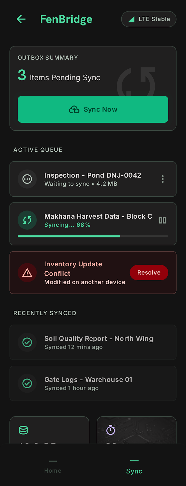
High-fidelity screen capture unavailable. Refer to source code directly.
Purpose
Expose complete offline data storage arrays tracking pending records queued for upstream synchronization over network layers.
Business Requirement
Deliver complete mobile visibility avoiding data loss in remote operating areas by supporting manual sync re-tries and detailed conflict arbitration.
User Experience (UX)
Categorized queue listing waiting, active, synced, and conflicted records alongside clear manual override execution controls.
User Actions
- Evaluate volume indicators monitoring outstanding cached records pending transmission.
- Tap "Sync Now" buttons triggering background network loop processing.
- Review failed or conflicted items launching split-screen data diffs.
- Select override actions committing local updates or falling back to remote server snapshots.
Technical Details
- Reads locally stored state structures directly from client-side SQLite sync_queue table blocks.
- Itemizes complex record properties wrapping serialized target payloads natively as JSON structures.
- Executes smart background upload sync loops utilizing native background job managers on connection restoration.
- Renders conflict alert panels upon catching mismatched optimistic concurrency control tokens during network commits.
Design Details
Top view outputs persistent online status dots displaying current active socket link parameters visibly.
Summary card renders concise sync diagnostics: E.g., "3 items pending sync" balanced against prominent manual upload triggers.
Item arrays separate record blocks cleanly based on synchronization states:
- Waiting lines output soft grey header markers paired with capture time strings.
- Syncing rows embed smooth rotating circle loader graphics rendering progress inline.
- Conflict lines utilize striking red borders displaying caution messages: "Server version differs. Review & resolve."
Tapping conflict entries launches clean warning sheets outputting side-by-side data diffs paired with large binary decision buttons ("Keep my version" vs "Use server version").
Database Schema
sync_queue (
id INTEGER PRIMARY KEY,
item_type ENUM ['inspection', 'verification', 'seal', 'registration'],
item_id VARCHAR(255),
item_data JSON,
captured_at TIMESTAMP,
status ENUM ['waiting', 'syncing', 'synced', 'conflict', 'failed']
)
Screen 09
Performance Dashboard
performance_dashboard
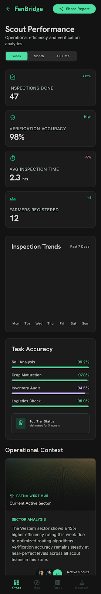
High-fidelity screen capture unavailable. Refer to source code directly.
Purpose
Render complete empirical metrics tracking ongoing field productivity, cumulative verification accuracy, and driving efficiency trends.
Business Requirement
Motivate internal personnel by itemizing performance progress mapped against organizational monthly operational targets.
User Experience (UX)
Rich data visualization panel displaying prominent numerical readouts, period selector pills, and intuitive horizontal chart trends.
User Actions
- Toggle timeframe targets selecting This Week, This Month, or All Time views.
- Inspect composite numerical values representing completed field assignments.
- Evaluate personal accuracy indices balanced across specific verification categories.
- Trigger export workflows sharing formatted productivity snapshots via messaging channels.
Technical Details
- Queries optimized summary models fetching matching keys across pre-calculated scout_performance_metrics files.
- Extracts detailed parameters tracking volume counts, precise verification percentages, and duration values.
- Assembles simple array inputs rendering optimized client-side data charts without relying on heavy chart libraries.
- Caches generated summary metrics locally enabling complete dashboard loading without network connectivity.
Design Details
Top header section embeds clean pill-style selector components switching data contexts instantly: This Week | This Month | All Time.
Key Metrics Grid arrays large numerical elements:
- Metric 1: Display string "47" mapping "Inspections Done" paired with smooth progress indicators.
- Metric 2: Composite value "98%" tracking "Verification Accuracy" utilizing clean color coding conventions.
- Metric 3: Time value "2.3 hrs" representing "Avg Inspection Time" outputting explicit unit descriptions ("per pond").
Trends Container renders elegant horizontal bar graphs mapping week-over-week productivity outputs clearly. E.g., Week 1 showing 5 operations alongside Week 2 outputting 8 operations.
Bottom area incorporates primary "Share Report" button options launching standard mobile share sheets.
Database Schema
scout_performance_metrics (
id UUID PRIMARY KEY,
scout_id UUID FOREIGN KEY,
month_year DATE,
farmers_registered INT,
inspections_completed INT,
verification_accuracy DECIMAL(5, 2)
)
Screen 10
Edit Profile
edit_scout_profile
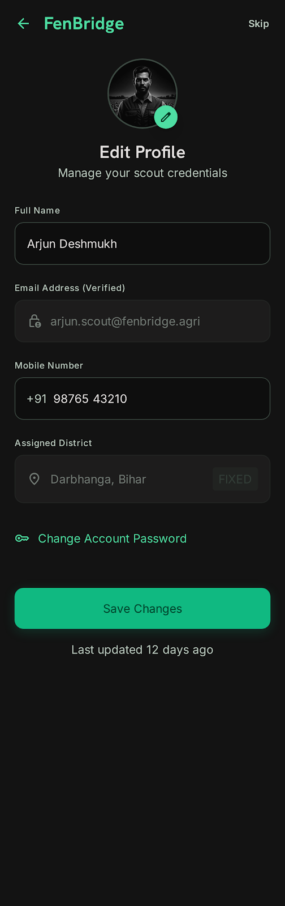
High-fidelity screen capture unavailable. Refer to source code directly.
Purpose
Update internal field personnel attributes covering editable contact numbers balanced against read-only administrative territory properties.
Business Requirement
Enable authorized employees to correct contact metadata directly while securely restricting unauthorized modifications to assigned operational districts.
User Experience (UX)
Structured single-column form interface separating editable inputs from locked metadata elements paired with dedicated password-update overlays.
User Actions
- Modify active mobile contact parameters tracking device messaging lines.
- Inspect pre-filled read-only fields representing bound corporate email identities and local administrative districts.
- Invoke "Change Password" links launching secure credential replacement forms.
- Commit target updates executing primary Save Actions.
Technical Details
- Binds target UI controls directly against active session values stored across users database models.
- Restricts user inputs on email and assigned_district targets enforcing un-editable read-only UI flags.
- Password change routines require cryptographic matching verifying entered current keys before generating updated bcrypt strings.
- Enforces robust client-side evaluations validating minimum password string criteria (length ≥8, alphanumeric mixing).
Design Details
Top view block outputs back button bindings alongside distinct headings: "Edit Profile" (Title 2).
Input form fields:
- Row 1: "Full Name" pre-filled with active user strings supporting full edit inputs.
- Row 2: "Email" displayed within subtle desaturated containers indicating read-only attributes.
- Row 3: "Mobile Number" supporting inline string adjustments accompanied by helper copy: "Your contact number for notifications".
- Row 4: "Assigned District" outputting locked location parameters alongside helper advice: "Assigned by Admin. Contact for changes."
Embeds clear secondary action links: "Change Password" opening sliding full-screen update panels.
Password Panel embeds current, new, and confirmation input textboxes outputting live strength indicators (Weak / Medium / Strong) inline upon input.
Database Schema
// Updating active employee core records securely:
UPDATE users SET full_name = new_name, mobile_number = new_mobile WHERE id = current_user_id;
Screen 11
Link WhatsApp (Common Hub)
link_whatsapp
High-fidelity screen capture unavailable. Refer to source code directly.
Purpose
Link messaging contact numbers securely to activate operational notifications and rapid peer-to-peer internal field communications.
Business Requirement
Enhance internal field delivery reliability by mapping alternative instant message notification paths parallel to standard system push models.
User Experience (UX)
Unified common flow matching core design layouts requiring phone number input validation, active OTP sequence checking, and visible confirmation blocks.
User Actions
- Access integration prompts from primary profile or global settings hubs.
- Submit active messaging numbers pre-filled automatically using registered account attributes.
- Receive and input multi-digit validation OTP codes delivered via external network bridges.
- Observe immediate success prompts confirming active multichannel routing.
Technical Details
- Validates mobile string input parameters client-side matching standard 10-digit numerical conventions.
- Communicates with platform message routing gateways dispatching localized OTP strings over network paths.
- Commits validated records directly toward shared whatsapp_links database tables attached to matching parent user keys.
- Context adjustment: Scout accounts utilize this link directly for urgent operational update broadcasts.
Design Details
Employs standardized layout containers avoiding redundant interface redesigns while preserving absolute visual consistency.
Step 1: Displays clean text inputs pre-filled with account phone values placed above primary CTA buttons reading "Send OTP".
Step 2: Renders focused OTP input components advancing focus state automatically upon numerical character entry.
Step 3: Exposes premium success panels displaying vector checkmark graphics alongside clear confirmation copy: "✓ You'll now receive updates on WhatsApp."
Database Schema
whatsapp_links (
id UUID PRIMARY KEY,
user_id UUID FOREIGN KEY UNIQUE,
whatsapp_number VARCHAR(20) NOT NULL,
verified_at TIMESTAMP
)
Screen 12
Settings (Common Hub)
settings
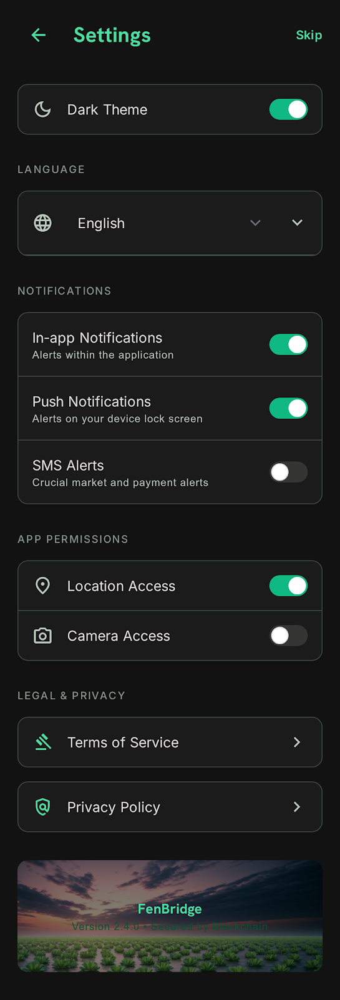
High-fidelity screen capture unavailable. Refer to source code directly.
Purpose
Centralize platform configuration options governing app-wide visual themes, interface languages, message channel routing, and hardware permissions.
Business Requirement
Empower operational personnel to customize display properties without mutating external database structures. Config persists client-side natively.
User Experience (UX)
Categorized control interface outputting persistent toggle components, clean language dropdowns, and deep link helpers auto-saving upon change.
User Actions
- Toggle main application theme between dark mode optimizations and light variants.
- Select active localization profiles switching displayed interface string values instantly.
- Manage operating permissions adjusting device-level hardware triggers (Location, Camera access).
- Review legal agreements clicking explicit linked privacy rows.
Technical Details
- Updates local SharedPreference variables immediately while syncing matching theme_preference keys back to core users records.
- Queries underlying OS security layers verifying explicit camera and background location permissions dynamically.
- Context adjustment: Scout accounts require highly reliable persistent location access to validate geo-fenced operations.
- Auto-saves state immediately upon toggle change accompanied by transient toast feedback messages.
Design Details
Utilizes shared high-fidelity component layouts rendering distinct grouped cards side-by-side.
Display section embeds rich toggle switches paired with intuitive vector labels. Language inputs render clean dropdown boxes outlining active selection states.
Notifications card maps primary channels displaying crisp custom toggle indicators inline.
Permissions block lists target hardware properties displaying current authorization markers visibly (✓ Allowed / ✗ Denied). Taps open native OS permission settings when required.
Privacy block items clean navigation shortcuts pointing toward corporate legal documentation files.
Database Schema
ALTER TABLE users ADD COLUMN IF NOT EXISTS theme_preference VARCHAR(10) DEFAULT 'dark';
ALTER TABLE users ADD COLUMN IF NOT EXISTS preferred_language VARCHAR(10) DEFAULT 'en';
Screen 13
Notification Preferences (Common Hub)
notification_preferences
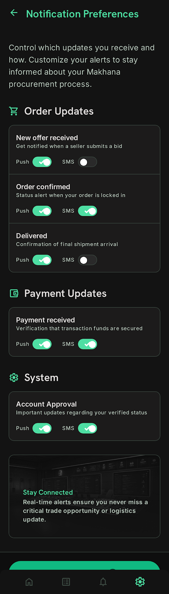
High-fidelity screen capture unavailable. Refer to source code directly.
Purpose
Fine-grained control matrix allowing personnel to activate or suppress specific alert events across supported multi-channel routes.
Business Requirement
Provide user-level customization controlling alert fatigue while ensuring mission-critical field updates remain active across essential channels.
User Experience (UX)
Categorized rows itemizing target operational events balanced against right-aligned triple-toggle components (In-app | Push | SMS). Auto-saves instantly.
User Actions
- Review comprehensive list itemizing supported platform alert event triggers.
- Toggle individual notification channels independently per target event row.
- Observe implicit commit executions saving preference parameters directly on state changes.
Technical Details
- Parses nested JSONB configuration blocks mapping active preference properties on the parent users database model.
- Updates specific boolean keys dynamically executing atomic database update queries.
- Context adjustment: Scout personas view tailored event targets including "New task assigned", "Inspection reminders", and "Sync failures".
- Bypasses full page postbacks by committing individual toggle values straight over network layers asynchronously.
Design Details
Top section features return buttons alongside descriptive header copy: "Control which updates you receive and how."
Event Group blocks itemize specific categories cleanly:
- Operational Updates block tracks core field items displaying clean right-aligned toggle arrays inline.
- Toggle switch elements utilize uniform 40 × 24 dp dimensions lighting up in primary accent colors when active.
Excludes explicit manual Save button bars to ensure seamless user navigation experiences.
Database Schema
// Committing localized preference updates straight into persistent user maps:
UPDATE users SET notification_preferences = jsonb_set(notification_preferences, '{task_assigned,push}', 'true') WHERE id = current_user;
Screen 14
Help & Support (Common Hub)
help_support
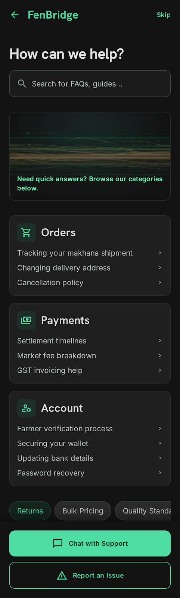
High-fidelity screen capture unavailable. Refer to source code directly.
Purpose
Central support repository delivering self-service FAQs, direct multichannel escalation links, and integrated form-driven field bug reporting.
Business Requirement
Accelerate resolution of technical exceptions in remote operational contexts while tracking systemic product pain points to drive iterative software hardening.
User Experience (UX)
Expandable accordion groups displaying categorized self-service questions placed above dual-option contact blocks and explicit issue filing modals.
User Actions
- Expand specific informational categories inspecting nested question-and-answer pairs inline.
- Tap support cards launching email composer templates or direct chat connections.
- Click "Report Issue" to invoke structured bug capture workflows capturing media logs.
Technical Details
- Loads pre-compiled static FAQ text blocks natively optimized for instant localized mobile rendering.
- Context adjustment: Scout screens display tailored operational categories including Offline Work, Tasks & Assignments, and Syncing Issues.
- Issue submission forms push direct API payloads toward support_tickets tables containing attached log traces.
- Escalations support direct deeplinking straight into external enterprise desk software integrations.
Design Details
Header renders clean navigation labels alongside explicit Title 2 headings.
FAQ section separates items across logical categorized headers: E.g., Offline Work, Syncing Issues, Tasks & Assignments.
Accordion items output clean chevron controls rotating smoothly upon client expansion.
Contact Us area renders side-by-side action blocks:
- Support Card 1: Employs messaging icons launching chat actions.
- Support Card 2: Features email envelopes displaying direct corporate help desk addresses.
Report Problem strip embeds full-width primary buttons opening clean modal overlay forms containing categorized drop-downs and file upload slots.
Database Schema
support_tickets (
id UUID PRIMARY KEY,
user_id UUID FOREIGN KEY,
issue_type ENUM ['bug', 'sync_error', 'form_issue', 'other'],
description TEXT,
screenshot_url VARCHAR(500),
status ENUM ['open', 'in_progress', 'resolved']
)